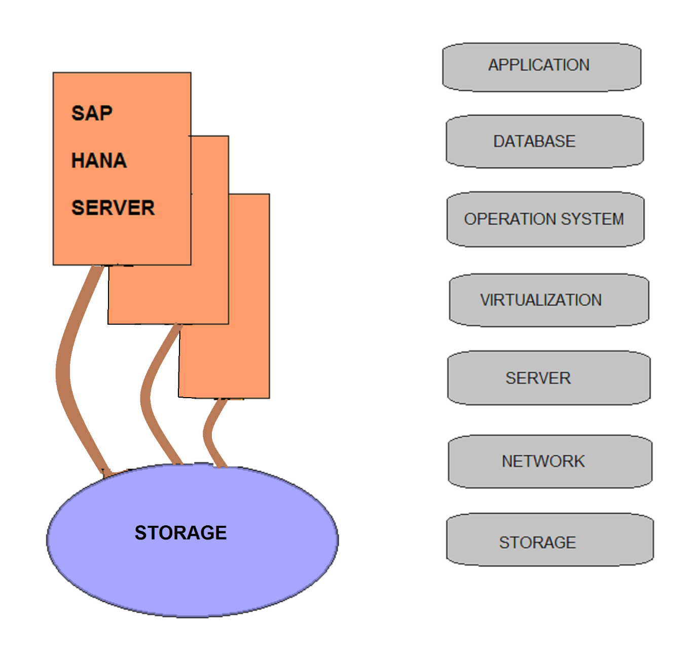
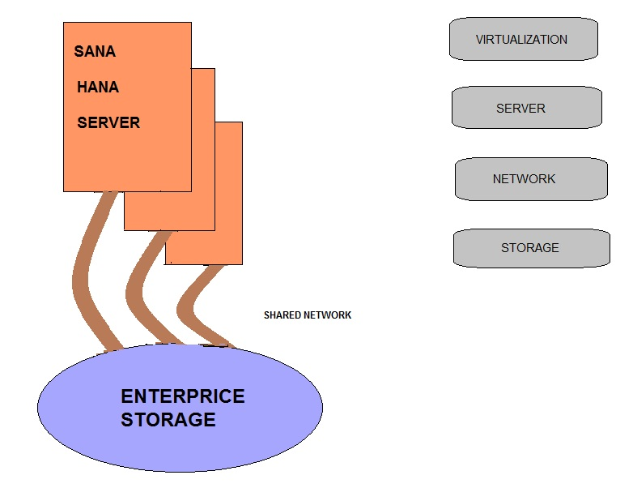

SAP HANA TDI
Evolution
SAP HANA architecture provides OLAP and OLTP data processing within in-memory column based data storage with ACID compliance, by providing advanced capabilities such as spatial processing, predictive text analytics o same architecture which simplifies application development and processing across big data sources.
SAP HANA is comfortable and easy but there are some limitations providing the flexibility of the hardware's that may be changed during the IT operation process. This has tempted the introduction of additional approach known to be as SAP HANA TDI.
TDI stands for Tailored Data Centre Integration which allows its HANA customers to have control on their infrastructure. TDI targets all the necessary components that is pre- configured and is provided with corresponding components that are delivered to the existing customers. Enables the use of enterprise storage and networking components that already exist in your Data centre rather than requiring customers to purchase additional storage and networking to be used only for the SAP HANA environment.
SAP HANA TDI enable the first evolutionary step away from the constraints of a very controlled standalone appliance model toward a model in which application data centres can be configured using existing SAP certified enterprise storage. SAP HANA TDI using shared enterprise storage was introduced with SAP Service Pack 7 and is generally available from SAP and will soon be extend this model to allow these same data centres to use existing enterprise networking. Support for the use of existing enterprise networking is expected to be available with SAP Service Pack 8.
When customers use the SAP HANA TDI model, existing storage and network can be used only if certain amount of resource is available and if all components used are SAP certified. Here, limited resources means that limited I/O bandwidth and storage capacity are available on both the storage network and storage system to meet the SAP HANA application needs in customer's infrastructure.
SAP HANA TDI Model
A typical SAP HANA appliance comes with all necessary components provided by certified SAP HANA hardware partners. The deployment of this application model does not allow business to use any existing data centre resources. SAP HANA installation should be done in its own remote infrastructure environment. The SAP HANA TDI model, provides the use of networking and storage components that already exist in your application datacentre rather than requiring you to purchase additional storage and networking resources to be used only for the SAP HANA environment. In addition, multiple production SAP HANA servers can share the same network and storage resources.
This capability can have a broad impact on operating expenses and investment expenditures where customers can use your existing network and storage investment in process, equipment and people. It provides reduction in operating and hardware costs by using the existing operation process and hardware components and use of the best investment in data centre architecture. SAP HANA TDI can optimize and risk operations and resources by using existing datacentre management processes for SAP HANA implementations. SAP HANA TDI are more flexible in deployment where network, storage resources and server can be shifted between SAP business and SAP HANA applications and also for non- SAP applications, it gains flexibility in hardware vendor selection and SAP HANA configuration.
SAP HANA TDI is used in both scale out and scale up scenarios, where in scale out it has been limited to 16 nodes. Besides being aware of the benefits of SAP HANA tailored data centre integration, also keep in mind that the approach requires several tasks and prerequisites. SAP HANA Tailored Data Centre Integration is used by any SAP HANA users, no matter whether the intended SAP HANA usage is hosting or not.
The appliance of the SAP is considered in all the hardware using the highest performance and highest quality for SAP HANA hardware systems. In SAP HANA systems, the components of the hardware are used for the solely SAP HANA hardware systems running over it; sharing of component hardware is not allowed with other systems. Hereby, requirements for SAP HANA appliances are more than of SAP HANA TDI. On the other hand, in an appliance the storage must cover for the appliance's computing nodes only. In SAP HANA TDI infrastructure the nodes connected to the storage components are more in number. This tend to be applied in all the cases where the storage of same product is provided inside a shared storage and appliance in SAP HANA TDI infrastructures. Such storage means to be capable of ensuring more performance inside the component appliance and storage.
Responsibility and Takeaway
The SAP HANA TDI provide inbuilt data which allows customers to use unlimited number of amounts of analytical, application data and transactional in real-time by having a simple computer's main memory. SAP HANA TDI can be used for customer's transition by using this application to improve business decisions. Customers can be benefitted with a high-performance and scalability of SAP HANA TDI for the best of the appliance right out to the storage and system components platform, so the storage infrastructure used by customers today are scaled to much of the rising demand. The appliance solutions provides infinite building block scale-out and increased flexibility.
SAP HANA is usually a highly optimized appliance and standardized, where it offers customers the opportunity to use the SAP HANA application server with their own storage component solution. SAP HANA tailored data centre integration provides a best application with freedom and openness for customers to configure the layer for SAP HANA depending on your existing data. It has the same no of material used as that of the SAP HANA component appliance but without storage component. This enables a reduction in operational costs and hardware through the using of the same operational processes and hardware components. SAP TDI distributes all the appliance model and support regarding the component of SAP HANA TDI to the right portion of the support organization. With tailored data centre integration the customer will be responsible for dealing with support agreements and also with various vendors with all kind of supporting aspects.
TDI model is mainly driven and established by the trust in which SAP has in their HANA plat form providing open configurations in a manner of controlling it. The customers can move from HANA which they are using current appliances towards a more determined IT open-ware based on advantages providing each and every company and their data centre.
TDI model is mainly driven and established by the trust in which SAP has in their HANA platform providing open configurations in a manner of controlling it. The customers can move from HANA which they are using current appliances towards a more determined IT open-ware based on advantages providing each and every company and their data centre.
Overall Quality
The Tailored Datacentre Integration model which provides vendors to mix and match their datacentre skills and leveraged vendors, with overall quality of the HANA solution. TDI are more futuristic ahead of its customers and time that has to change with the future. Customers are provided with mix and match certified servers into same old enterprise storage systems. This provides much low risks, costs for strategic HANA adoption, time-to-value and effortlessly standardise the datacentre.
SAP HANA TDI is strategically has the sign of opening and maturing to provide the much needed appliances to the customers focused on solutions based that rely on the adoption of open market. There is clear evidence that HANA adoption will continue to grow. There is a clear long term for SAP HANA TDI where customers tend to have their reliable appliance route to HANA TDI, where it can be on long-term adoption to multi-vendor appliances and best in class. More customers now adapt to HANA, customers are taking a path towards the TDI route to HANA TDI. Within the short timeframe it's been predicted that SAP HANA TDI will provide one of the SAP application in your datacentre making customers from freeing up the HANA appliances. This provides more customers to manage themselves from the hold of the black-box approach of HANA appliances. One that can be approved and deployed in the infrastructure of the TDI model.
